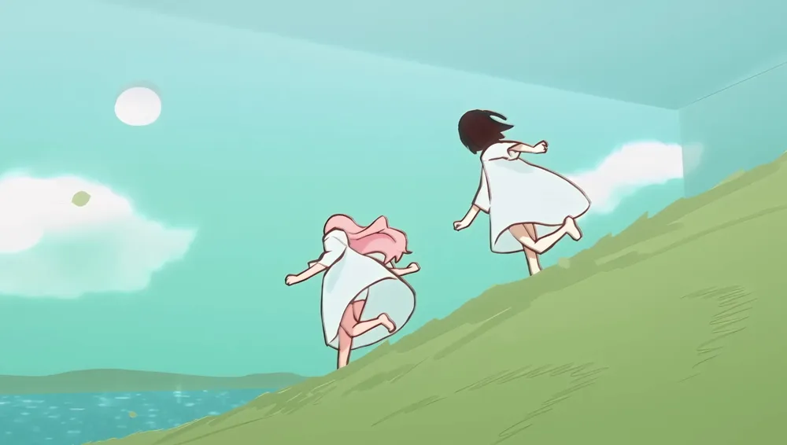
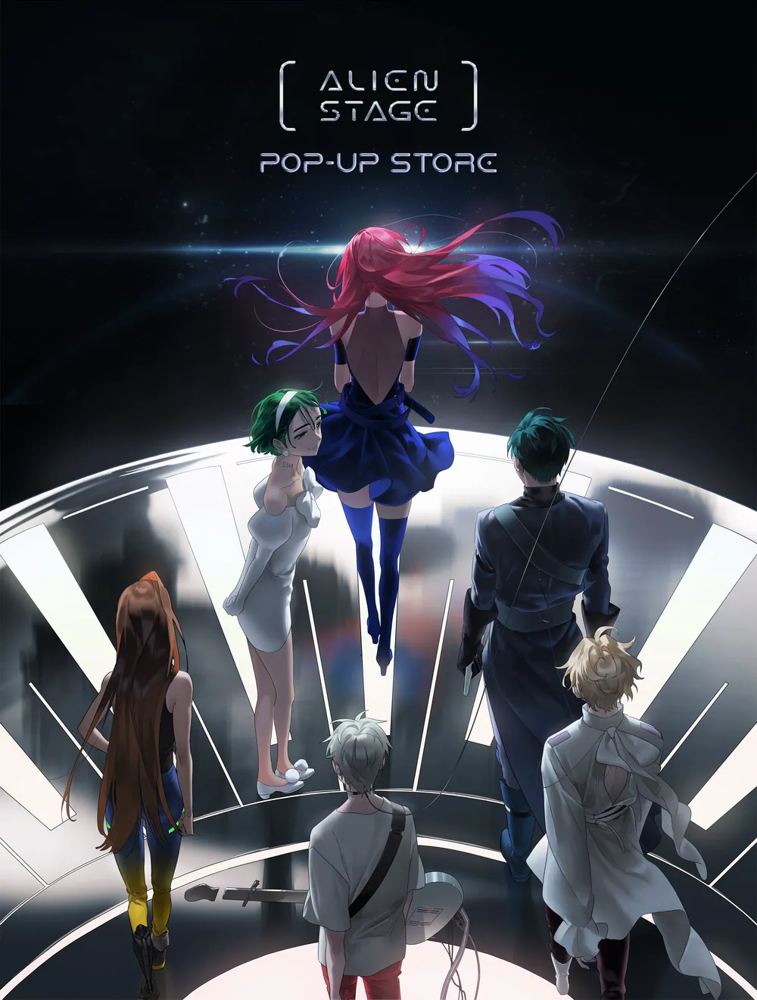
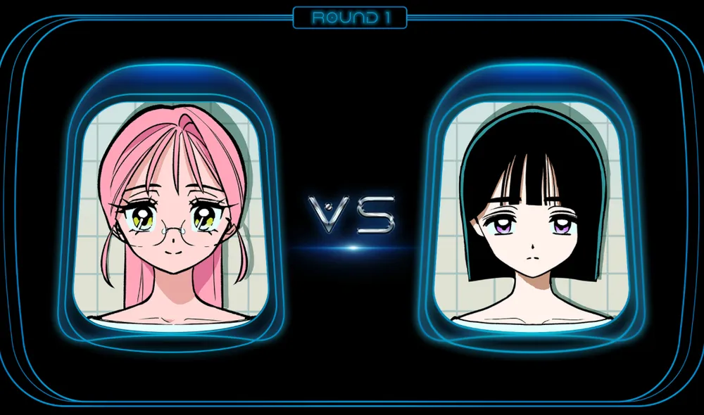
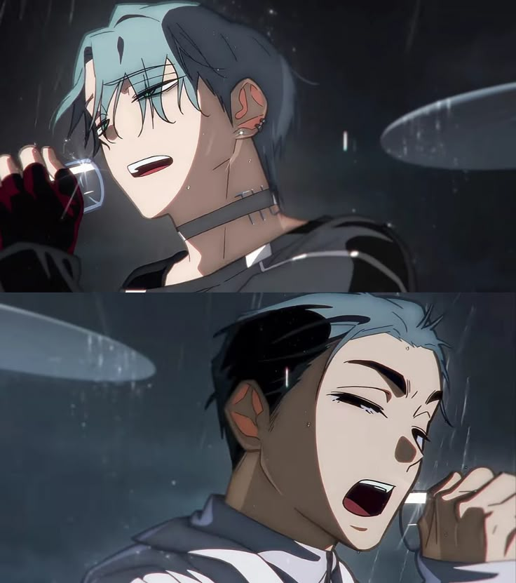
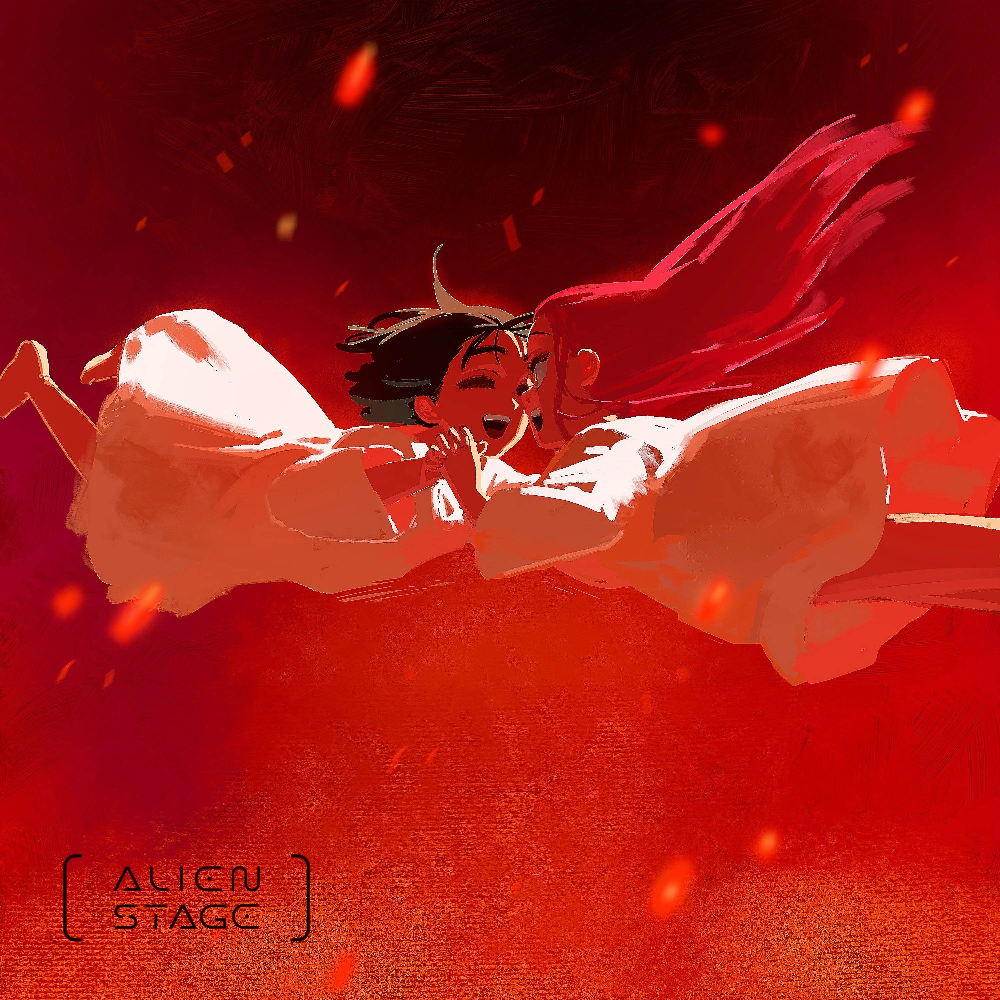

HISTORIA:ANAK GARDEN
La historia se sitúa en un universo distópico donde la Tierra está controlada por alienígenas que mantienen a los humanos como mascotas o ganado. El centro de la trama es Anak Garden, una especie de "jardín de niños" donde los humanos son criados desde pequeños y entrenados rigurosamente para cantar. El propósito es que se conviertan en participantes del Alien Stage, un programa de entretenimiento cruel donde deben competir en duelos de canto.
En esta etapa se establecen los vínculos principales: el amor puro entre Mizi y Sua, la compleja obsesión de Iván por Till, y la revelación de que el perdedor de cada duelo es ejecutado en vivo frente al público alienígena.


HISTORIA:TRAGEDIA Y REBELION
El trauma de Mizi: La muerte de Sua en el "round 50" (al perder contra Mizi por un solo punto) se convierte en el motor emocional de toda la historia
Sacrificios: La tensión alcanza su punto máximo cuando Iván decide sacrificarse en un duelo contra Till. Al besarlo y dejarse ahorcar para que Till sea calificado como ganador, Iván demuestra finalmente la intensidad de sus sentimientos y libera a Till de la obligación de seguir luchando
La intervención de la resistencia: Se introduce a Hyuna, una luchadora que lidera la rebelión, cuya historia está entrelazada con Luka, un veterano del concurso que, durante su infancia, mató accidentalmente al hermano de ella.


HISTORIA:DESENLACE
El quiebre: Durante los enfrentamientos finales, Mizi, devastada por haber perdido a todos sus seres queridos -Sua, Iván (indirectamente) y finalmente Hyuna, quien muere protegiendo a Luka-, decide que el juego debe terminar.
El acto de libertad: Mizi sabotea el sistema utilizando un cohete preparado por la rebelión. En lugar de huir, destruye el escenario y a los espectadores alienígenas en un acto de libertad simbólica frente a la opresión que los obligaba a vivir.
Consecuencias: La serie cierra mostrandoa los supervivientes profundamente marcados por el trauma. Till vive con secuelas físicas y psicológicas, mientras que Mizi carga con la culpa de haber fingido ignorancia durante años, lamentando no haber estado cerca de Suacuando más lo necesitaba.
.jpg)
